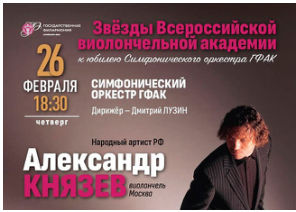
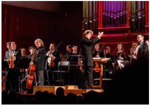
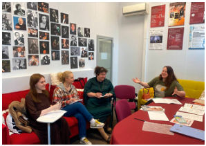
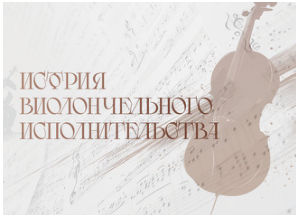
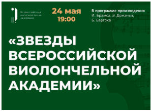
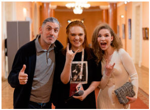
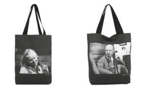
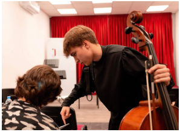

CELLO Новости · с. 6–7
Сезон 2025/2026
Итоги сезона: IV Академия имени А.П. Никитина, «Музыкальные портреты», «Новая школа», 35 концертов
Прошедший сезон 2025/2026 стал для Виолончельной Академии периодом масштабного роста.
Одно из ключевых событий – проведение IV Всероссийской виолончельной академии имени А.П. Никитина, проходившей в Москве с 26 по 29 марта на площадках «Геликон-оперы» и Московской консерватории.
Это проект, объединивший мастер-классы, лекции и творческие встречи с участием признанных музыкантов. Его торжественным завершением явился Гала-концерт «Виолончель нового времени» в Большом зале консерватории 29 марта, где прозвучали премьеры сочинений современных композиторов. Кульминацией грандиозного виолончельного «марафона» стало выступление Александра Князева с сочинением Георгия Гусева «SOLACE», которое было специально написано автором для этого вечера.
Отдельное направление этого сезона – цикл «Музыкальные портреты», представляющий собой самостоятельную серию камерных концертов в здании Академии. В рамках этого проекта было проведено 13 концертов молодых исполнителей: Тихона Евланова, Айболата Абдыбакаса, Михаила Васильева, Марии Исаевой, Ярослава Шмидта, Адриана Маркевича, Тамары Слуцкер, Богдана Ефремова, Марка Фахрутдинова, Русалины Гусейнзаде, Евгении Ванюковой, Екатерины Семёновой и Даниила Зимина.
Параллельно, с ноября по апрель в Камерном зале Академии проходил образовательный проект «Новая школа», в рамках которого 15 молодых музыкантов в возрасте от 20 до 35 лет (Мария Зайцева, Иван Сканави, Равиль Ислямов, Александр Ключко, Иван Сендецкий, Василий Степанов, Илья Яшин, Леонид Железный, Михаил Усов, Анна Савкина, Геннадий Акинфин, Павел Романенко, Варвара Кутузова, Александр Ключко, Эрик Мирзоян и Лев Журавский) провели серию мастер-классов по виолончели, скрипке, альту, фортепиано и кларнету. Цель этого цикла – раскрытие молодых исполнителей в качестве педагогов.
В общей сложности за сезон Академия провела 35 концертов, охвативших Россию и Европу. Одним из ярких международных событий стал зимний фестиваль в Париже, где молодые звёзды (Мария Зайцева, Михаил Пейсель, Анна Фетри и Анастасия Кузаева) представили программы, включавшие музыку русских и французских композиторов.








Концерты проходили и в городах России: например, в Оренбурге прошел концерт «Ростроповичу посвящается» с Оренбургским государственным симфоническим оркестром под управлением Юрия Ткаченко и солистами Михаилом Пейселем и Михаилом Васильевым. Академия организовала ряд концертов Александра Князева по городам Сибири (Барнаул, Омск и Томск). Кульминацией сезона стал масштабный заключительный концерт «Звёзды Всероссийской Виолончельной Академии» 2 июня в Большом зале консерватории, в котором выступили Александр Князев, Александр Рамм, Василий Степанов и молодые музыканты в сопровож дении МГАСО под управлением Ивана Никифорчина.
В конце весны у Академии появился Институт исследований и методологии виолончельного искусства. Его научным руководителем стала Татьяна Лукашина, а научными сотрудниками Елена Алексеева и Любовь Мансырева. Было также запущено новое исследовательское направление: вышли первые 20 видеолекций Татьяны Лукашиной из цикла «История виолончельного исполнительства». Кроме того, Академия получила почётное право на хранение наследия выдающегося виолончелиста ХХ века Анатолия Никитина — его семья передала проекту уникальный нотный архив, который создаёт основу для будущих переизданий и методических работ.
Академия продолжила укреплять партнёрские связи. Она выступила официальным партнёром таких крупных мероприятий, как Всероссийский конкурс молодых композиторов «Партитура» и Межрегиональный открытый конкурс исполнителей на струнно-смычковых инструментах имени В. Я. Шпета, учредив там специальные призы.
Совместно с брендом Artograph была выпущена долгожданная коллекция, приуроченная к IV Всероссийской виолончельной академии. Стильные шоперы и футболки, ранее доступные только для преподавателей и участников проектов, поступили в открытую продажу на официальном сайте бренда и на платформе Lamoda.
В конце августа прошло первое в истории Академии Открытое прослушивание для виолончелистов от 14 до 35 лет. Комиссия в составе Александра Рамма, Бориса Андрианова и Марии Зайцевой прослушала более 60 участников из разных городов и стран и дала им высокопрофессиональные комментарии и советы.